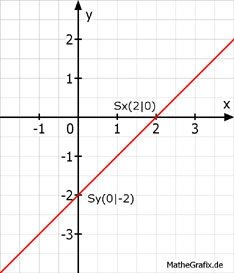

Lineare Funktionen Aufgabe 49 In welchen Punkten schneiden die Geraden die Koordinatenachsen? y = x - 2 Für alle Punkte auf der y-Achse gilt x = 0 Für alle Punkte auf der x-Achse gilt y = 0 y = 0 - 2 y = -2 Sy(0|-2) 0 = x - 2 | +2 x = 2 Sx(2|0) 